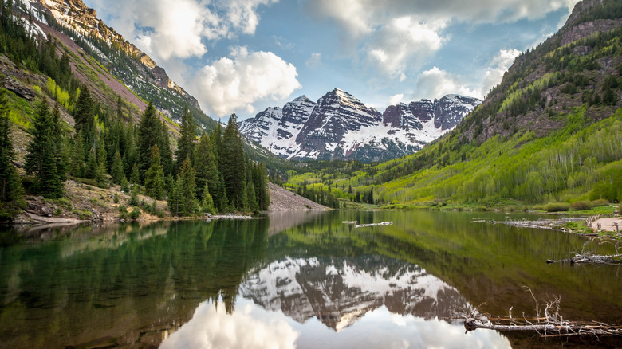

I live in Highlands Ranch, which allows me to be near the Rocky Mountains. I love having them close by! I want to hike and explore more of the mountains this year. One goal is to summit more 14ers and push myself on trails that I haven't done before. I also love getting out of town, breathing fresh air, and seeing things from above. I want to make it out to the mountains as many weekends as possible.
Mountains allow me to slow down and take in what nature has to offer. I would love to hike up a mountain before the sun rises to watch the sunrise from above. Seeing the sunrise at the top of the mountain would mean more to me after a strenuous climb. While hiking, I am forced to be patient and keep pushing when the trail gets tough. My intentions are to spend more time outdoors and make memories.
Like they say:
The mountains are calling and I must go.
- John Muir
A thousand petty fears and cares that eat away the vitals of convalescents are cast aside in the mountains. Thousands of tired, nerve-shaken, overcivilized people are beginning to find that going to the mountains is going home; that wildness is a necessity.
— John Muir
| Item | Why I Need It | Priority |
|---|---|---|
| Hiking boots (must be waterproof) | I need to protect my ankles on rough terrain | High |
| Trekking poles | They will assist me on downhill slopes | High |
| Water filter | I can get safe water from anywhere! | Medium |
| Headlamp + extra batteries | I'll be starting early and possibly finishing late | High |

Get outside. Climb higher. Live bigger.